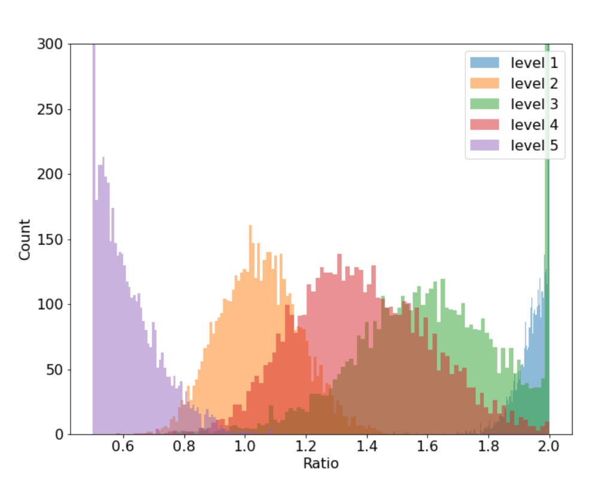
Figure 3. 尺度比值（高分辨率层学习权重 ÷ 低分辨率层学习权重）分布，统计自 COCO val2017 全部图像。level 5（紫）被调向低分辨率、level 1（蓝）被调向高分辨率，不同层级的尺度差异被平滑。
把检测头的输入视为「层级 × 空间 × 通道」三维张量，将尺度感知、空间感知与任务感知统一为三个串联的注意力——作为即插即用模块，在 COCO test-dev 取得 54.0 AP，配合 Transformer 骨干与额外数据推至 60.6 AP。
“The complex nature of combining localization and classification in object detection has resulted in the flourished development of methods. Previous works tried to improve the performance in various object detection heads but failed to present a unified view. In this paper, we present a novel dynamic head framework to unify object detection heads with attentions. By coherently combining multiple self-attention mechanisms between feature levels for scale-awareness, among spatial locations for spatial-awareness, and within output channels for task-awareness, the proposed approach significantly improves the representation ability of object detection heads without any computational overhead. … With a standard ResNeXt-101-DCN backbone, we largely improve the performance over popular object detectors and achieve a new state-of-the-art at 54.0 AP. Furthermore, with latest transformer backbone and extra data, we can push current best COCO result to a new record at 60.6 AP.”
— 论文摘要原文（节选），CVPR 2021 / arXiv:2106.08322一句话概括：不新增复杂结构，而是把「该看哪一层、该看哪里、该看哪些通道」统一成检测头上的注意力学习问题。
同一图像中物体尺度差异巨大。特征金字塔不同层级的语义差异，正对应物体尺度；跨层级改进表示学习即可增强尺度感知。
不同视角下物体形状、旋转与位置差异显著。不同空间位置的特征承载这些几何变换，跨位置改进表示学习即可增强空间感知。
边界框、中心点、关键点等表示具有完全不同的目标与约束。不同通道的特征对应不同任务与表示，跨通道改进表示学习即可增强任务感知。
现状：特征金字塔与路径增强的工作聚焦尺度，可变形卷积一系聚焦空间变换，各式物体表示的工作聚焦任务建模——彼此缺少统一的视角，尚无工作把三种感知放进同一个检测头同时优化。
| F ∈ ℝL×S×C | 把 L 个层级特征缩放对齐到中间层尺度，S = H × W 后重排得到的三维张量。 |
| L | 特征金字塔层级数——对应物体尺度差异。 |
| S | 空间位置数——对应形状、旋转、位置的几何差异。 |
| C | 通道数——对应任务与物体表示的差异。 |
论文将此视为首次把三个维度上的多重注意力组合进统一检测头，以最大化各方向改进的合力。
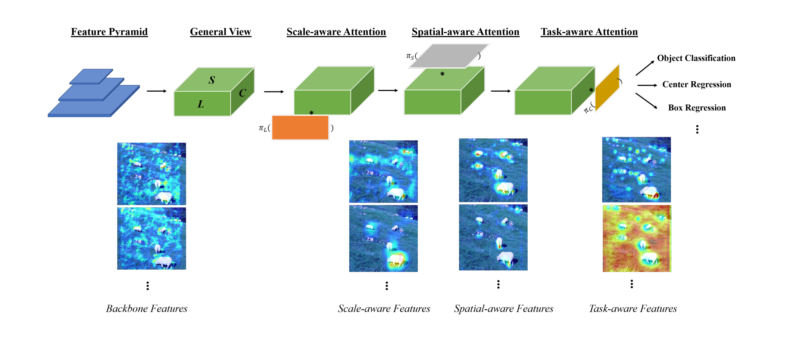
与以往在骨干 / 金字塔上做多尺度融合不同，这里把尺度选择放在检测头内部，且是数据驱动的动态加权。
算例：设某通道切片 Fc = 1，θ(·) 输出 α1 = 0.5、β1 = 0.2、α2 = −0.3、β2 = 0.4。分支一 = 0.7，分支二 = 0.1，取 max 后输出 0.7。该通道被「打开」，而具体程度由输入决定。
该模块位于串联注意力末端，输出直接供下游分类、回归等分支使用；对一阶段与两阶段、框 / 中心 / 关键点表示均适用。
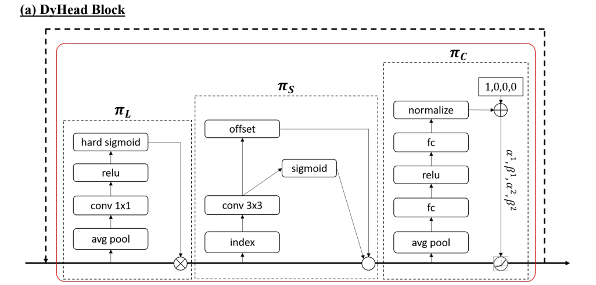
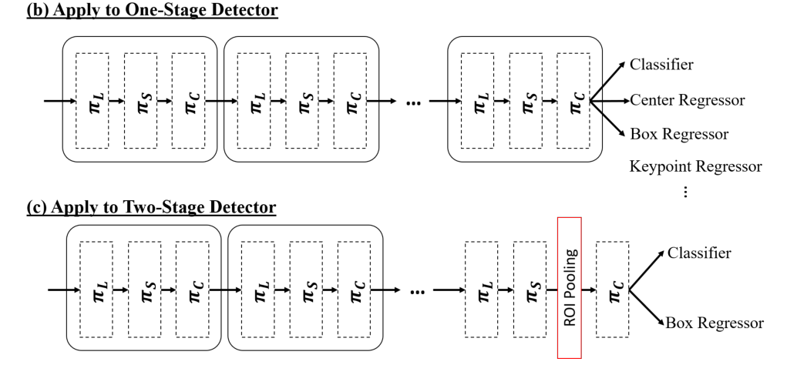
RetinaNet 等通常在骨干后挂多个任务特定子网。DyHead 只接一条统一分支即可处理多任务；FCOS、ATSS、RepPoints 等 anchor-free 变体只需在头端追加各类预测（Fig. 2b）。
先在 ROI Pooling 之前施加 πL 与 πS，再用 πC 替换原来的全连接层，把统一注意力延伸到两阶段框架（Fig. 2c）。
设计意图：把三种感知做成可插拔的头部组件，不绑定某一种检测范式——这也是 Table 3 能覆盖五类框架的前提。
可变形卷积以稀疏采样改进传统卷积的变换学习，可视为只建模空间维度。它多用于检测骨干、少用于检测头；骨干中的可变形模块与 DyHead 互补——本文用 ResNeXt-101-64x4d-DCN 骨干取得新 SOTA。
Non-Local Networks 用点积形式融合不同空间位置的像素特征，可视为只建模层级与空间两个维度，未显式处理通道 / 任务维度。
Transformer 以多头全连接层学习跨注意力对应、融合不同模态特征，可视为只建模空间与通道两个维度。
三类注意力都只部分建模特征张量的子维度；DyHead 把不同维度上的注意力合成一个连贯实现，并显式对应检测的三类挑战——相较之下既有方案的工作机制是隐式的。后文实验（尤其 Table 5）显示，这一设计带来实际收益。
· 80 类、约 160K 张网络图像；train2017 / val2017 / test2017 分别含 118K / 5K / 41K 张。
· 所有实验只用 train2017 训练、不用额外数据；消融在 val2017 评测，与 SOTA 对比报告 test-dev 官方结果。
· 指标为 COCO AP 系列：AP、AP50、AP75、APS、APM、APL。
· 未特别说明时用 ATSS 训练框架；单节点 8 × V100 32GB。
· 消融统一用 ResNet-50 + 1x 日程；其余模型用 2x。
· 初始学习率 0.02、weight decay 1e−4、momentum 0.9，在 67% 与 89% 轮次各乘 0.1。
· 增强仅用随机水平翻转；为对比多尺度输入方法，部分模型采用多尺度训练。
推理与声明：与使用测试时增强的方法对比时采用多尺度测试；未使用 model EMA、mosaic、mix-up、label smoothing、soft-NMS 或自适应多尺度测试——精度增益因此更易归因于 DyHead 本身。
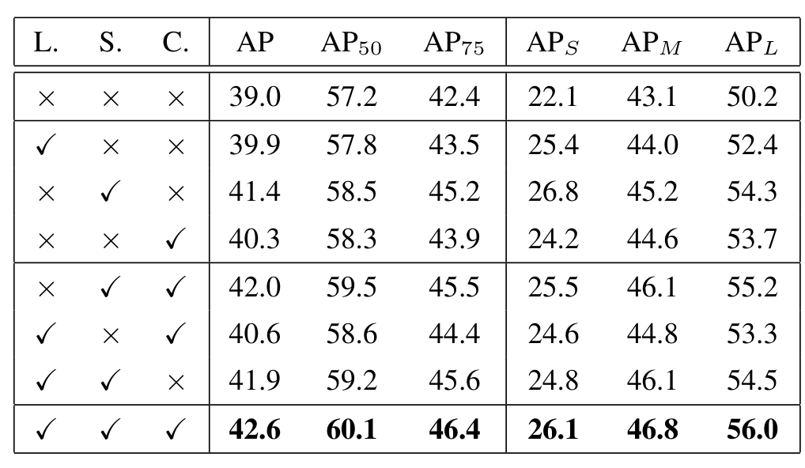

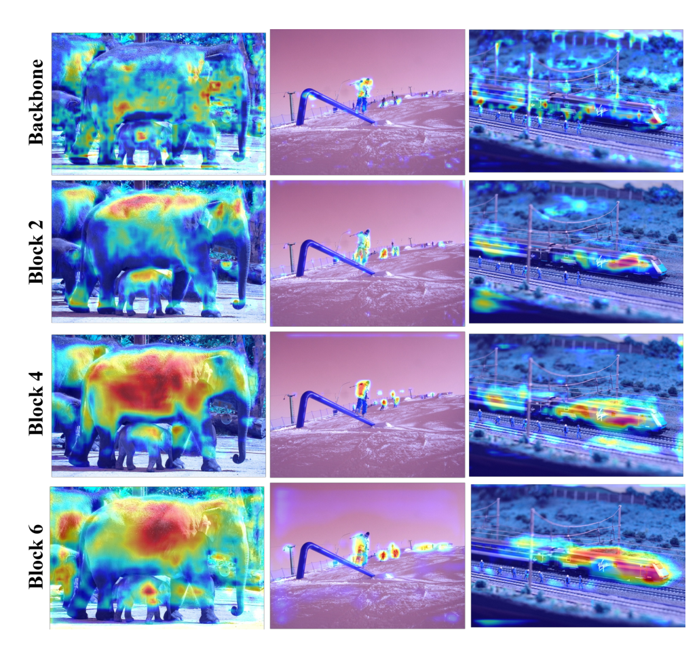
两图合看：Fig. 3 证明层级权重确实在学「把尺度拉齐」，Fig. 4 证明空间注意力确实在学「把位置聚焦」——为两个模块的有效性提供了除 AP 数值之外的直接证据。
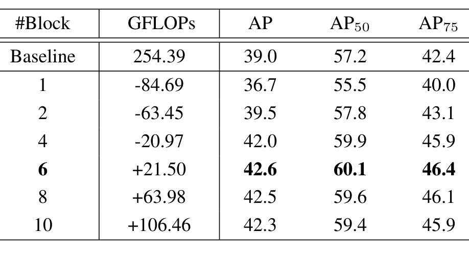
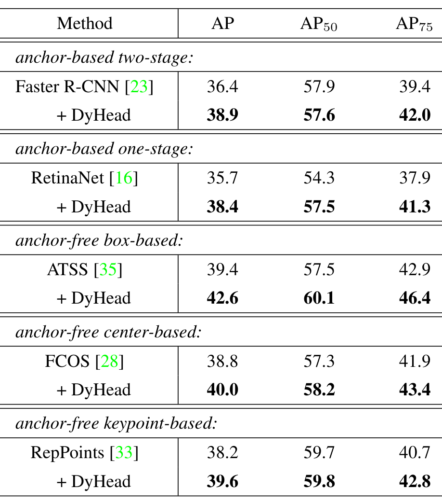
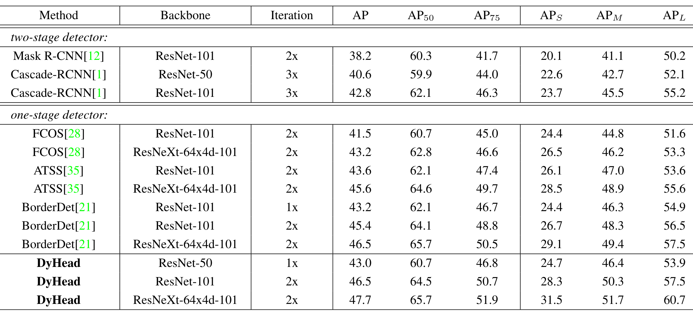
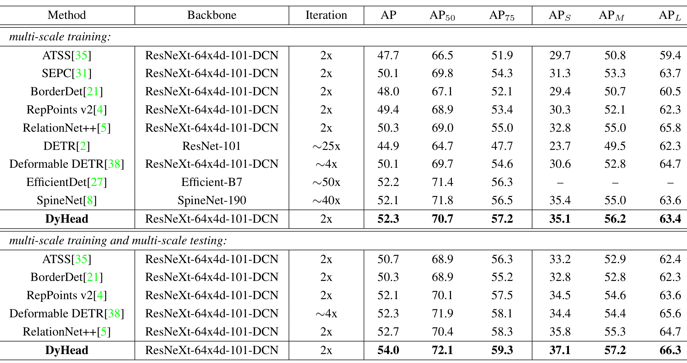
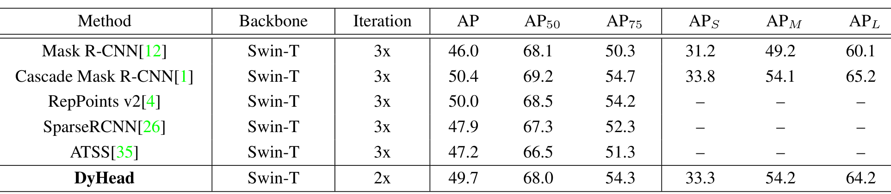
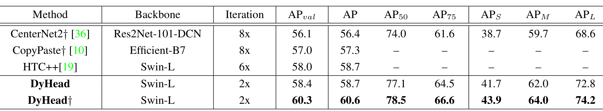
口径提醒：60.6 AP 同时叠加了 Swin-L 骨干 + 更大输入 + 额外数据，不能与 54.0 AP 的 ResNeXt-101-DCN 结果直接横比；论文也把 60.6 放在附录而非主表。
把尺度、空间、任务感知统一为三维张量上的注意力学习，并让 Deformable / Non-Local / Transformer 成为子维度特例。
接入 Faster R-CNN、RetinaNet、ATSS、FCOS、RepPoints，一致提升 1.2 ∼ 3.2 AP；2 块即超基线且更省算力。
同时完成分类与回归，对检测头的轻量化改造有直接借鉴意义。
COCO test-dev 54.0 AP；附录叠加 Swin-L、更大输入与额外数据后推至 60.6 AP。
作者自述的后续方向：如何让完整注意力模型更易学习、计算更高效；如何把更多模态的注意力系统性地纳入检测头设计。